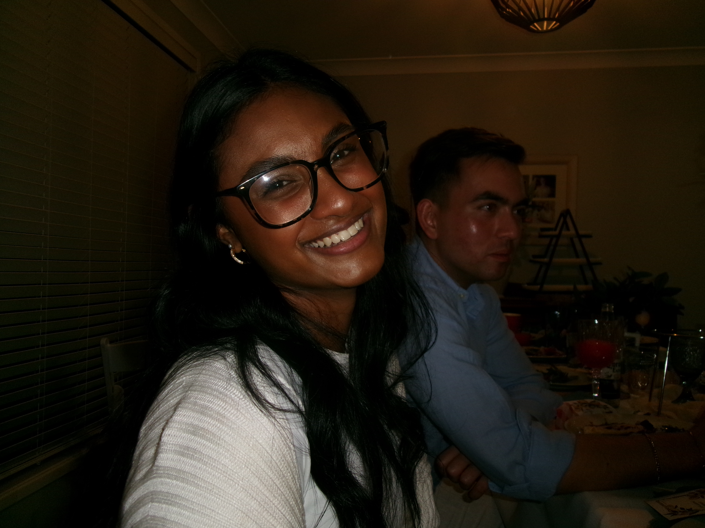
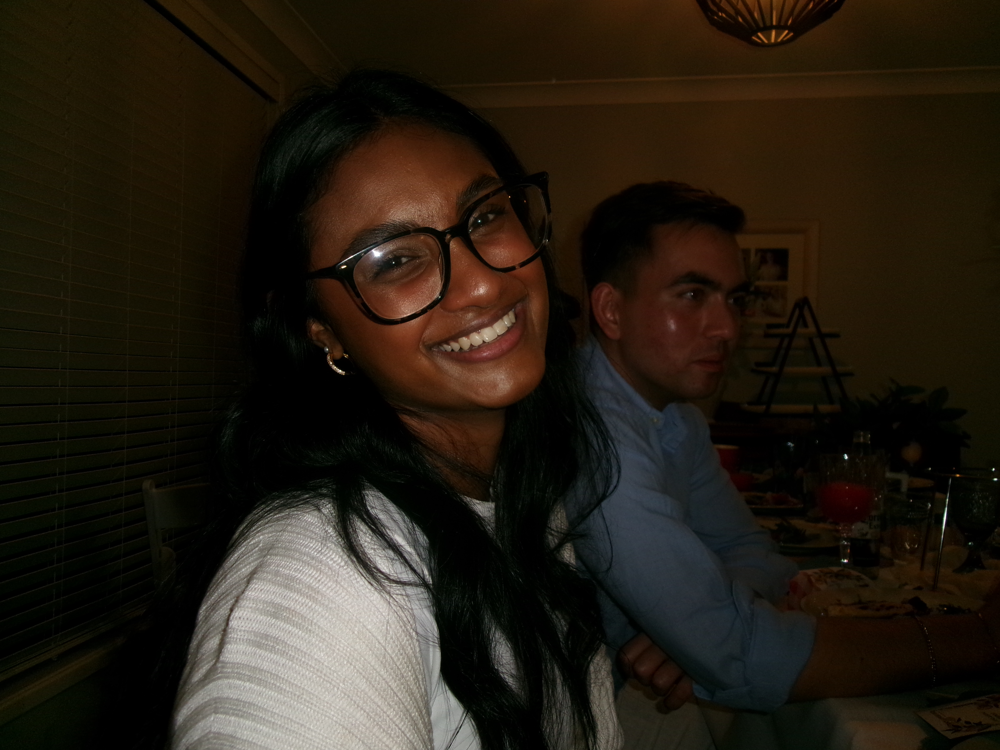

About Me
 

Hello! I'm Yevari Naiker, a passionate pre-service secondary teacher with a strong interest in design and technologies. With only a few years of experience in pre-service teaching, I've developed a deep understanding of how to bring ideas to life through thoughtful design and meticulous attention to detail.
Background
I began my journey in design and technology with a degree in secondary education from Australian Catholic University. Since then, I've worked on a variety of projects ranging from food, textiles, timber, metal, etc. My experience has allowed me to explore different facets of the complex TAS field, by going on placements, which is spoken about in another page.
Personal Interests
When I'm not working on university projects, I enjoy spending time with my friends and family. As well as working at Elite Sports Castle Hill and being on the committee for Kellyville Kolts Football Club.
What Drives Me
I believe that "design is more than just aesthetics; it's about creating meaningful experiences that connect people and improve their lives". My goal is to continue learning, growing, and contributing to projects that make a positive impact on the world.
Contact Me
Thank you for visiting my website! Feel free to explore my work, and don't hesitate to reach out if you'd like to collaborate or learn more about what I do.